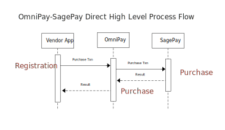
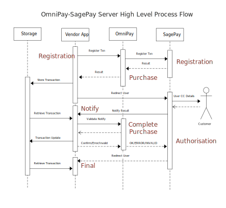

OmniPay
The PHP Library for Payment Gateways
Presentation for @PHPNE by Jason Judge / @JasonDJudge
(Speaker notes are in this slideshow for more background - press 'S' to see them)
The Problems to Solve
- To abstract the gateway
- To switch gateways more easily
- To avoid supplied SDKs - they are awful
- To provide the common services
(authorize/void/capture/payment)
Basic Architecture
- Composer-based
- Core
omnipay/commonpackage - Official
omnipay/{gateway-name} drivers - Unofficial third party drivers
- All drivers built from low-level specs; no SDKs
Some Figures
- Version: 2.3.x
- PHP: 5.3+
- Official gateways: 27
- Unofficial gateways: 25
- Dependencies: Guzzle, Symfony
- Author: Adrian Macneil, now The PHP League with many contributors
Official Gateways (1)
* omnipay/2checkout
* omnipay/authorizenet
* omnipay/buckaroo
* omnipay/cardsave
* omnipay/coinbase
* omnipay/common
* omnipay/dummy
* omnipay/eway
* omnipay/firstdata
* omnipay/gocardless
Official Gateways (2)
* omnipay/manual
* omnipay/migs
* omnipay/mollie
* omnipay/multisafepay
* omnipay/netaxept
* omnipay/netbanx
* omnipay/payfast
* omnipay/payflow
* omnipay/paymentexpress
* omnipay/paypal
Official Gateways (3)
* omnipay/pin
* omnipay/sagepay
* omnipay/securepay
* omnipay/stripe
* omnipay/targetpay
* omnipay/worldpay
Unofficial Gateways (1)
* academe/omnipay-helcim
* agmscode/omnipay-agms
* alfaproject/omnipay-neteller
* alfaproject/omnipay-skrill
* andreas22/omnipay-fasapay
* andylibrian/omnipay-veritrans
* cardgate/omnipay-cardgate
* coatesap/omnipay-datacash
* coatesap/omnipay-paymentsense
* coatesap/omnipay-realex
Unofficial Gateways (2)
* dabsquared/omnipay-cybersource-soap
* delatbabel/omnipay-fatzebra
* dercoder/omnipay-ecopayz
* dercoder/omnipay-globalcloudpay
* dioscouri/omnipay-cybersource
* fruitcakestudio/omnipay-sisow
* igaponov/omnipay-wirecard
* justinbusschau/omnipay-secpay
* lokielse/omnipay-alipay
* mfauveau/omnipay-nmi
Unofficial Gateways (3)
* mfauveau/omnipay-pacnet
* omnipay/payu
* paypronl/omnipay-paypro
* samvaughton/omnipay-barclays-epdq
* teaandcode/omnipay-worldpay-xml
That's a Lot of Payment Gateways

Gateway Architectures
- Direct
- Server to Server
- High PCI responsibility
- Hosted
- User leaves the site (can use iframe)
- Result sent back by notify channel
- Shared
- JavaScript or direct POST from browser
- Back channel used to check the results
How to Use OmniPay
- OmniPay handles the messaging
- You handle the routing and data
General Use
1. Create the Gateway Object:
~~~php
$gateway = OmniPay::create('SagePay\Direct')
->setVendor('academe')
->setTestMode(true);
~~~
All credentials are set at this stage:
~~~php
->setAccount('myAccount')
->setKey('myKey')
->setSecret('mySecret')
~~~
General Use
2. Create the Credit Card/Customer Object:
~~~php
$card = new CreditCard([
'firstName' => 'Jason',
'lastName' => 'Judge',
'number' => '4929000000006',
'expiryMonth' => '12',
'expiryYear' => '2016',
'CVV' => '123',
'billingAddress1' => 'Campus North',
'billingCity' => 'Newcastle Upon Tyne',
// ...
'shippingAddress1' => 'Campus North',
// ...
]);
~~~
General Use
3. Create the Request Message:
~~~php
// Purchase Request
$requestMessage = $gateway->purchase([
'amount' => '99.99',
'currency' => 'GBP',
'card' => $card,
'transactionId' => $transactionId,
'description' => 'Pizzas for everyone',
'returnUrl' => 'http://example.com/complete',
'cancelUrl' => 'http://example.com/complete',
'errorUrl' => 'http://example.com/complete',
]);
~~~
General Use
4. Send the request message:
~~~php
$responseMessage = $requestMessage->send();
~~~
Get a Response message in return.
Handle any exceptions.
General Use
5. Take next action based on response:
~~~php
if ($responseMessage->isSuccessful()) {
// All finished and all successful.
// ...
} elseif ($responseMessage->isRedirect()) {
// Do the redirect.
$responseMessage->redirect();
} else {
// Some kind of error:
// Log $responseMessage->getMessage();
// ...
}
~~~
Some gateways may have other required actions.
General Use
6. If returning from a redirect:
Repeat steps 1-5 with the "complete" version of the service.
~~~php
// Use completePurchase() to complete the Purchase.
$requestMessage = $gateway->completePurchase([
'transactionId' => $transactionId,
'transactionReference' => $transactionReference,
]);
$responseMessage = $requestMessage->send();
// Then check the result as before.
~~~
Integration
* composer: ignited/laravel-omnipay - Alex Whiteside
* composer: barryvdh/laravel-omnipay - Barry vd. Heuvel
Example Application
* github: thephpleague/omnipay-example
Gateway Trends
- More going for "shared" option, using JavaScript or direct POSTing.
- Token-based payments are becoming more popular as the number of subscription services grow.
OmniPay Version 3.0
- Planned for end 2015
- Improved Documentation
- Namespace change to
League\Omnipay\{gateway-name} - Remove dependencies: Guzzle and Symfony
- PSR-7 HTTP models will be used instead
- Splitting the credid card and the payee details
- More metadata to automate plumbing better
Demo Time
Demo: SagePay Direct
Demo: SagePay Direct
- One script:
authorise.php
- User stays on one site
- Authorisation in one step
The full demo scripts are available at
https://github.com/academe/OmniPay-SagePay-Demo
Demo: Switch to SagePay Server
Demo: Switch to SagePay Server
- Three scripts (for the three steps):
authorise.phpsagepay-confirm.phpfinal.php
- User redirected to SagePay site
Thank You
Feedback most welcome